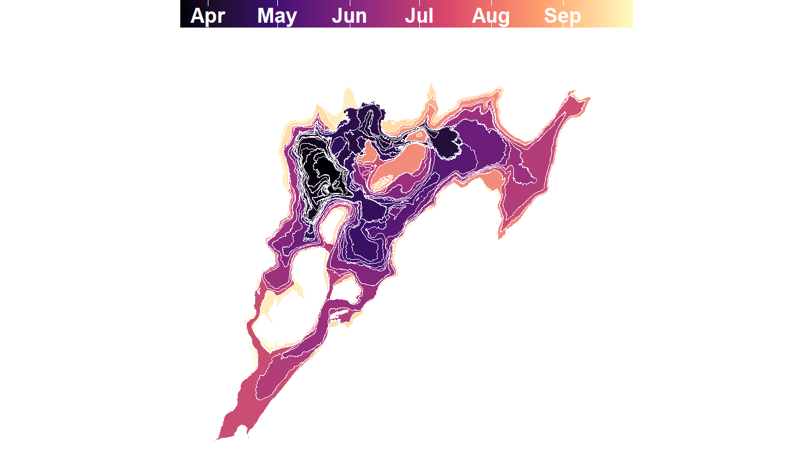

Vector and raster data cubes are efficient tools for the spatio-temporal analysis and monitoring of landscapes and landforms
Geomorphic landform monitoring with raster and vector data cubes
Lorena Abad 1, 
@loreabad6
lorena.abad@plus.ac.at
1 Department of Geoinformatics - Z_GIS, University of Salzburg, 5020 Salzburg, Austria
Introduction
- Landscapes and geomorphic landforms are in constant change, where dynamic processes drive their evolution over time.
- Assessing these changes allows us to understand landscape patterns and interrelations.
- Monitoring the evolution of landforms related to natural hazards, like proglacial lakes, volcanic lava flows, landslides or gully erosion, is important for disaster risk prevention and mitigation.
- Data cubes and Earth observation data allows the study of landscape dynamics.
- Objectives:
- Explore the applicability of vector data cubes as a way to organise, analyse and visualise geomorphic landforms with changing geometries.
- Integrate vector data cubes with information derived from raster EO data cubes.
Challenge
- Long time series analysis at pixel location is possible due to the gridded nature of data cubes.
- But, these queries over time ignore the spatial context.
- Moving from a pixel to an object representation can improve the analysis of landscape dynamics, specially for geomorphological analyses.
- Feature extraction techniques (e.g. OBIA, Deep Learning) can outline geomorphological features at different points in time.
- But once we transition from a pixel-based to a vector representation, the query and analysis advantages of a data cube are lost.
- The challenge lies on the changing shapes of the geomorphological features.
Implementation
- Array-based and tabular representations are tested to build vector data cubes.
- The approach is exemplified with the Fagradalsfjall volcanic lava flow outlines from [1].
- Integration of vector data cube structures with raster data cubes are explored
- EO derived information is aggregated over the landform geometries.
Results
- Vector data cubes for shape-evolving feature can be implemented as array and tabular formats.
- The aggregation approach allows for further landform characterisation
- Extracted data is matched considering the spatial and temporal properties of the landform.
- The usage of vector data cube representations could advance the spatio-temporal analysis and monitoring of landscapes and landforms.
- This can benefit different disciplines related to the geosciences.
References
[1]
G. B. M. Pedersen et al., “Digital elevation models, orthoimages and lava outlines of the 2021 fagradalsfjall eruption: Results from near real-time photogrammetric monitoring.” Zenodo, Apr. 2023. doi: 10.5281/zenodo.7866738.